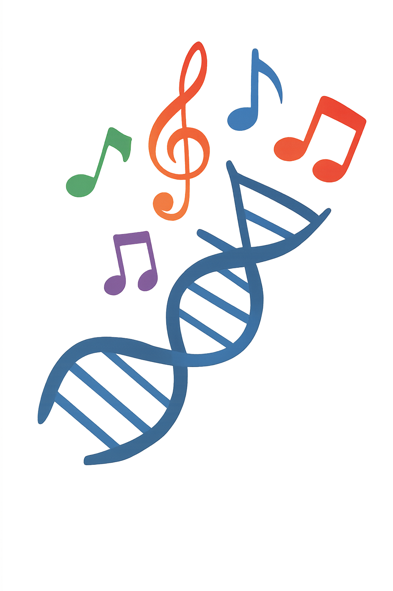

Descubre cómo la genética y la música se entrelazan en el estudio del sonido y la herencia
Descubre cómo tus preferencias musicales podrían relacionarse con rasgos genéticos y patrones de personalidad

Cada persona percibe la música de manera distinta. Tus respuestas emocionales a estos seis fragmentos musicales pueden reflejar características relacionadas con tu sensibilidad auditiva
Algunas de esas características están influidas por la genética, pero la epigenética modula profundamente como tu cerebro responde al sonido. La música activa genes relacionados con emociones, memoria y creatividad.
Tú eliges cómo te hace sentir cada clip y después descubrirás qué puede contar tu patrón sonoro sobre tu "ADN Musical".
A continuación escucharás 6 clips con ritmos y estructuras muy diferentes entre sí. Elige la opción que mejor describa tu reacción emocional. Este test no mide talento musical, solo explora como tu cerebro responde a distintos patrones sonoros.
Descubre cómo la genética y la música se entrelazan en el estudio del sonido y la herencia
Descubre cómo tus preferencias musicales podrían relacionarse con rasgos genéticos y patrones de personalidad